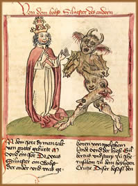
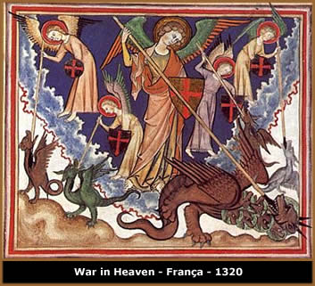

Segundo registros, a palavra demônio
tem origem no grego daimónion e pelo latim daemoniu,
e significa "gênio inspirador, bom ou mau, que
presidia o caráter e o destino de cada indivíduo,
alma, espírito. Nas religiões judaica e cristã,
anjo mau que, tendo-se rebelado contra Deus, foi precipitado no
Inferno e procura a perdição da humanidade; gênio
ou representação do mal".
Em
paralelo e intrinsecamente associado aos demônios, há
a conotação sobre o inferno; que, através
de uma definição cristã bastante genérica
é "lugar ou situação pessoal em
que se encontram os que morreram em estado de pecado, expressão
simbólica de reprovação divina e privação
definitiva da comunhão com Deus".
Desse modo, o inferno pode ser
compreendido não como um ambiente de localização
geográfica, mas de natureza espiritual onde habitam os
demônios. Também, a alma dos mortos que, por penitência
imposta pela divindade devido a uma vida de pecados, atravessam
a eternidade sendo martirizadas pelo fogo e pelas angústias
espirituais. Na Bíblia, encontram-se citações
como "Os ímpios serão lançados no
inferno, e todas as nações que se esquecem de Deus"
(Salmos – 9:17) e "E deu o mar os mortos que nele
havia; e a morte e o inferno deram os mortos que neles havia;
e foram julgados cada um segundo as suas obras"
(Apocalipse – 20:13).
Entretanto, a conotação
cultural dos demônios e o conceito de inferno são
muito mais profundos e complexos, estando presente na espiritualidade
de diversas civilizações desde a antiguidade, se
desenvolvendo, solidificando e perpetuando-se no consciente coletivo
até os dias de hoje.
Luz & Trevas
A dualidade entre bem e mal, céu e inferno,
Deus e diabo, luz e trevas é primordial nas doutrinas e
crenças de vários povos. Uma vez que é através
desta bipolaridade que se permite desenvolver outros princípios
básicos como a busca de um ponto de equilíbrio existencial
ao indivíduo e os frequentes combates entre estas forças;
ou seja, uma conjunção entre poderes distintos,
de criação e destruição capazes de
dar origem ao universo.
Este preceito pode ser observado, por exemplo,
em Baal, a divindade mesopotâmica da fertilidade
e do furacão (como uma metáfora de vida e destruição).
Da mesma forma que a idéia de dois mundos distintos, um
bom e um mal que caracteriza Céu e Inferno, surge da combinação
das culturas de persas e caldeus.
Demônios
na Antiguidade
Os primeiros registros culturais sobre a existência
destes seres encontram-se nas civilizações da Mesopotâmia,
Persa e Egito. Neste momento, catástrofes naturais, doenças
e guerras já são atribuídas a estas criaturas.
Ainda, acreditava-se que desertos e florestas seriam ambientes
propícios aos demônios e as habitações
que não estivessem devidamente protegidas estariam vulneráveis
à sua ação maligna.
Nas doutrinas espíritas, os demônios
simplesmente não existem; pois, sua existência seria
contra a própria natureza divina de amor e bondade. No
entanto, aceita-se que espíritos em estado de evolução
ainda bastante primitivo; ou seja, aqueles que ainda não
atingiram uma elevação suficiente para libertarem-se
do mundo profano e mantém-se imersos em ignorância
espiritual, possam assumir uma condição maléfica
e influir negativamente no processo natural de evolução
humana; sendo assim, associados aos demônios.
No
ponto de vista judaico-cristão, que é certamente
o mais difundido, os demônios são anjos
de natureza divina que se rebelaram contra a própria
criação. Neste aspecto, Lúcifer é
a entidade mais conhecida e considerada superior as outras
classes hierárquicas do panteão demoníaco.
Sendo também considerados criaturas malignas que
interferem diretamente na existência humana provocando
enfermidades, catástrofes natu- rais, desarmonia
e infligindo-lhes tentações com intuito de
desviá-la do caminho divino.
Ainda, aceita-se a idéia de que estes seres
possam tomar posse do corpo físico de cada indivíduo
e influenciá-lo negativamente (conhecida como possessão
demoníaca). Neste caso, faz-se necessário o uso
do exorcismo como
meio de expulsar o espírito do corpo tomado. A própria
Bíblia cita "Porque tinha ordenado ao espírito
imundo que saísse daquele homem; pois já havia muito
tempo que o arrebatava. E guardavam-no preso, com grilhões
e cadeias; mas, quebrando as prisões, era impelido pelo
demônio para os desertos" (Lucas – 8:29);
e "E, quando vinha chegando, o demônio o derrubou
e convulsionou; porém, Jesus repreendeu o espírito
imundo, e curou o menino, e o entregou a seu pai" (Lucas
– 9:42).
Em práticas ocultistas é comum o
exercício de conjuração demoníaca
com o objetivo de que estes seres se submetam à vontade
do magista de modo a proporcionar-lhe "vantagens" na
vida cotidiana. Entretanto, obviamente, é estabelecido
um pacto de troca no qual o conjurador compromete-se a "pagar"
ao demônio com um sacrifício ou, como é conhecido
popularmente, "vendendo a própria alma".
Demônios
Medievais
Na Idade Média, mais precisamente no período
conhecido como Baixa Idade Média, a própria Igreja
Católica, através da intolerância religiosa
que tinha os tribunais inquisitórios
como mais eficiente instrumento de repressão, colaborou
com o fortalecimento da imagem dos demônios atribuindo a
adoração às divindades pagãs ao culto
demoníaco; da mesma forma que enfermidades que não
podiam ser diagnosticadas eram relacionadas à ação
diabólica.
Curiosamente, o Bispo de Tusculum, em 1273, concluiu
que 133.306.668 de anjos, durante nove dias, se rebelaram contra
o Criador, na Guerra do Paraíso. Em 1460 este número
foi confirmado pelo Bispo espanhol Alphonsus de Spina. O apócrifo
Livro de Enoque afirma que 200 anjos copularam com filhas dos
homens e geraram uma raça de gigantes conhecida como Nephilim.
O Talmude (registro principal do judaísmo rabínico)
estipula uma população demoníaca de 7.405.926
criaturas.
No entanto, ainda no período medieval,
havia uma questão existencial em relação
à natureza do bem e mal que a própria Igreja protagonizava:
se Deus, criador do universo, é essencialmente bom, porque
permitira que suas próprias criaturas angelicais fossem
tomadas pela vaidade e orgulho, a ponto de rebelarem-se e tornarem-se
representações do mal?
Santo Agostinho respondeu a questão com
o argumento do livre-arbítrio, no qual, quanto mais próxima
a criatura estiver de Deus, (anjo ou homem), maior é seu
poder de discernimento; podendo assim optar em seguir o caminho
divino ou renegá-lo em virtude da trilha demoníaca
do mal.
Demonologia
Da mesma forma que a angelologia estuda a natureza
e a ação angelical, a demonologia ocupa-se do estudo
relativo aos demônios. Sua origem pode ser associada ao
pensamento de São Tomas de Aquino que, no século
XIII, potencializa a figura demoníaca a partir da iconografia
pagã que se utiliza da junção física
de homem-animal para representar suas divindades. Neste caso,
o bode, animal tido como símbolo de fertilidade, cede patas
e cornos para a arte medieval representá-lo como personificação
do mal. Neste momento, a figura de Satã é delineada
claramente como o Anti-Cristo.
Assim, estabelece-se uma espécie de hierarquia
demoníaca e uma classificação que é
definida por "funções e poderes" de cada
criatura. Encontra-se, por exemplo, referências aos Súcubos
e aos Íncubos, que seriam, respectivamente, demônios
de natureza feminina e masculina capazes de transmutar sua "aparência
física" com o objetivo de manter relações
sexuais com seres humanos durante o sono.
Ainda, a expressão legião é
usada na literatura ocultista (e inclusive na própria bíblia)
para se referir a um grupo de demônios: "E perguntou-lhe:
Qual é o teu nome? E lhe respondeu, dizendo: Legião
é o meu nome, porque somos muitos" (Marcos –
5:9).
Demônios
Modernos
Na transição
entre os séculos XV e XVI, com o advento do Renascimento
e do Iluminismo, alguns aspectos da espiritualidade humana foram
subjugados em detrimento do progresso científico. Assim,
a figura do demônio, inferno, dualidade e outros elementos
que fundamentavam as crenças da Antiguidade e Medieval,
também ficaram esquecidos.
Entretanto, sua imagem se
difundido imensamente na cultura e nas artes ocidentais, como
Mefistófeles em Fausto, de Goethe
e Satã em Macário, de Álvares
de Azevedo. Em cada uma das aparições, o demônio
traz características distintas, ora hostil e agressivo;
ora lúcido e irônico.
Já em meados do século
XX, com início do movimento New Age, ressurgimento de algumas
crenças pagãs e a propagação de doutrinas
orientais, o demônio ressuscitou como um "objeto de
estudo" e tornou-se alvo de adoração por seitas
como Satanismo
e Luciferianismo;
porém, através de perspectivas bem particulares,
não tendo necessariamente uma relação com
princípios históricos e culturais.
Por
Spectrum
Download
Disponível: